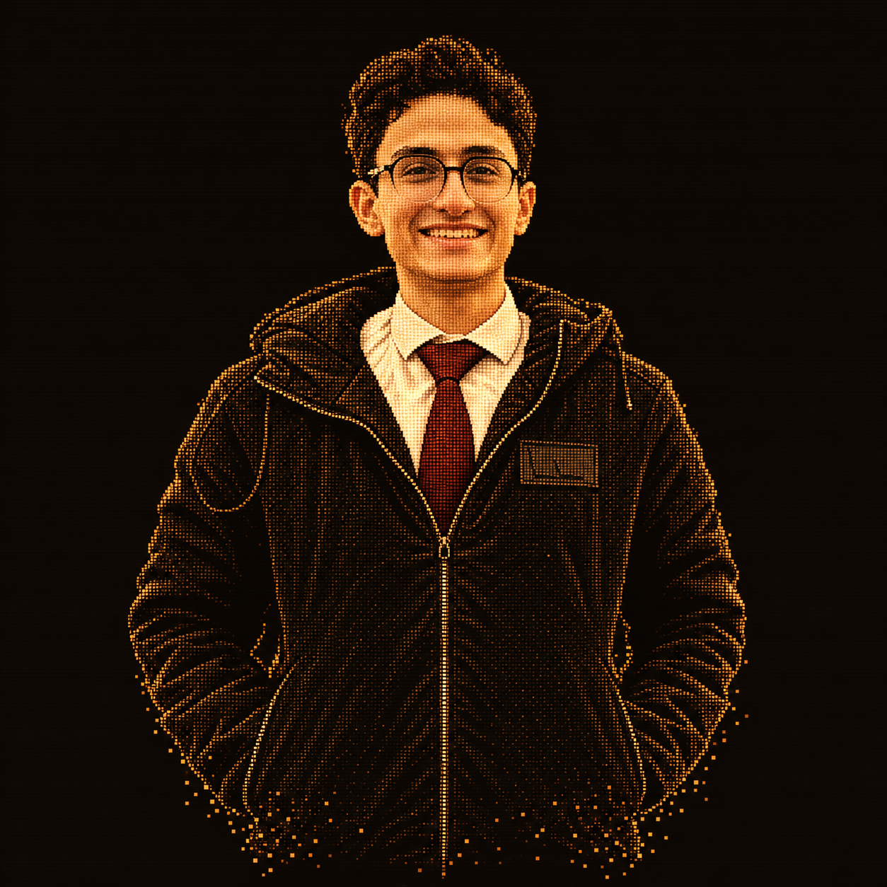

Your photograph. A different dimension.
A little more alive.
A portrait made of light.
Move closer. Pull it apart.
Watch it find its way back.

FIG. 001 / AMBER
A portrait made of light.
Move closer. Pull it apart.
Watch it find its way back.
